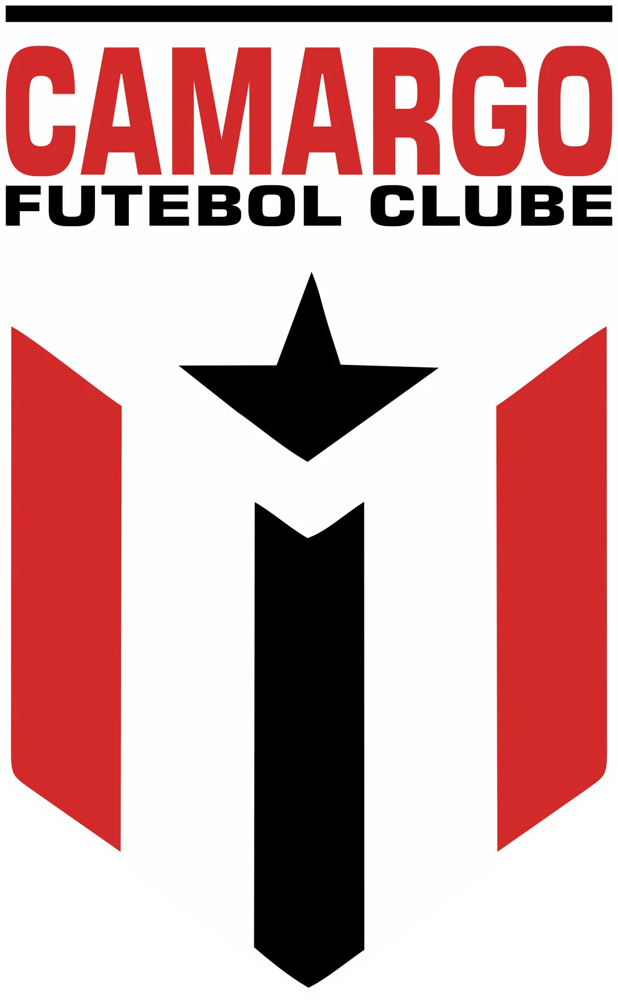

Camargo FC · Futsal · Temporada 2026
Camargo FC retorna às quadras para a 13ª Liga Paraíso de Futsal
O Camargo FC vai voltar às atividades na categoria futsal. O retorno está previsto para a disputa da 13ª Liga Paraíso de Futsal 2026, cuja abertura está marcada para 19 de outubro.

Uma equipe jovem para a volta
O grupo será formado por uma equipe jovem, com predominância de atletas sub-20. A proposta é voltar às quadras valorizando a juventude e dando espaço para uma nova geração vestir a camisa rubro-negra.
Retornos, reforços e estreias
Vinicius Jadiel está de volta ao futsal do Camargo FC depois de já ter integrado as equipes de futsal e society do clube. Neiva Jr. também retorna: ele já vestiu a camisa do futebol em 2023 e passou pelos elencos de futsal e society. Paulo Sérgio, de Araguacema, também soma experiência nas equipes de futsal e society do clube.
O elenco terá ainda os reforços de atletas do futebol desta temporada: Carlos Henrique, Janio, João Marçal e Clovis Henrique. Gabriel Antonio, que também atua no futebol, defenderá o futsal e será o capitão. Luiz Nogueira e Victor Gabriel farão sua estreia no elenco de futsal.
Lista de inscritos no futsal
- Lucas Cauã
- Janio
- Carlos Henrique
- Luiz Nogueira
- Neiva Jr.
- Gabriel Antonio
- Victor Gabriel
- Vinicius Jadiel
- Paulo Sérgio
- João Marçal
- Clovis Henrique
A participação marca a retomada do Camargo FC no futsal. A equipe agora se prepara para o início da competição, previsto para 19 de outubro.